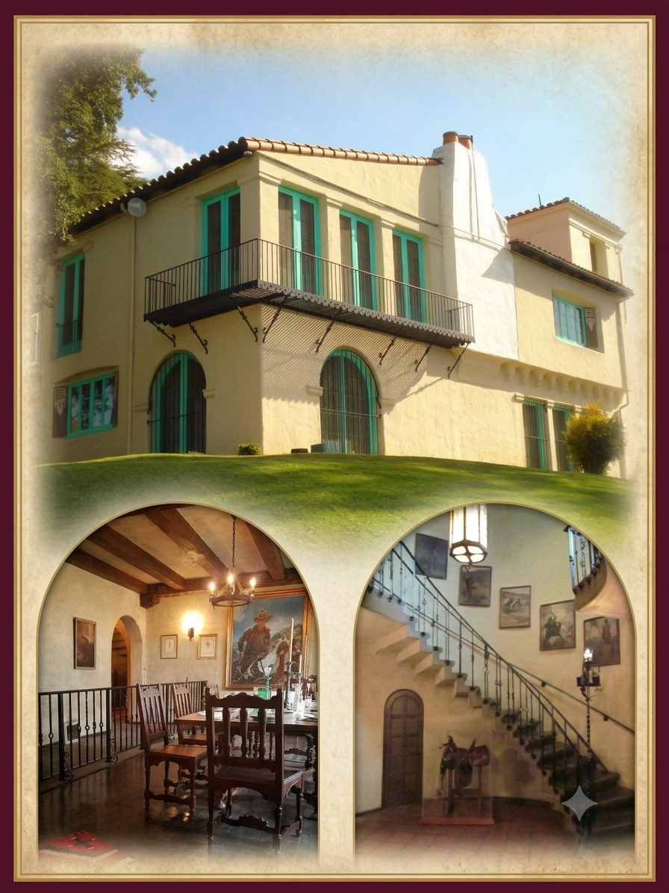

La Loma de los Vientos

We welcome you to view the exterior of Hart’s Mansion with its impressive views and stunning Spanish Colonial Revival style architecture. Perched grandly atop the hill, this majestic 22-room mansion—christened "La Loma de los Vientos" (The Hill of the Winds)—stands as a beautiful monument to the Golden Age of silent Western films.
Getting to the top is part of the experience! From the parking lot at the bottom of the hill, guests will walk a scenic quarter-mile up the Nature Trail to the Mansion. Along your way, be sure to stop and appreciate the other historic structures and sites located along the trail, such as the 1910 Ranch House, the vintage Bunk House, the Pool House, and Mary Ellen’s Tea Room.
Schedule a Group Tour
Ready to visit the interior of the mansion? Book yourself, your organization or school group for a guided tour!
Book Your Tour Online